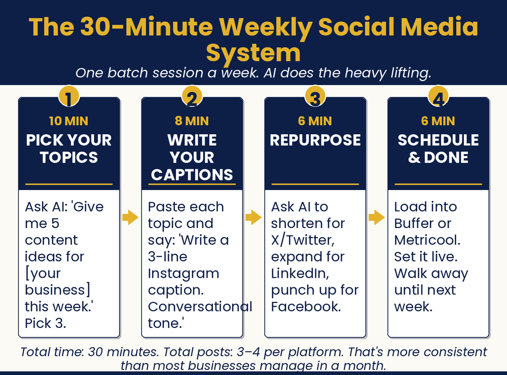

Chapter 8 — Your Social Media Machine
How to Show Up Every Week without Losing Your Mind
How do I keep up with social media while I run my business?

Chapter Recap
Most owners know they should post more. They just run out of time and ideas. This chapter turns social media into a simple routine. Set aside thirty minutes a week. Let AI help you plan a month of posts, write the captions, and match your voice. One good post can be reshaped into five. You stay consistent without living on your phone. Showing up every week beats being perfect once in a while.
In This Chapter
- Why Consistency Beats Brilliance
- The Content Calendar Problem (and the Fix)
- Making Captions Sound like You
- Platform by Platform: What AI Handles for Each
- The Repurposing Trick That Turns One Post into Five
- Make It a Habit: Your 30-Minute Weekly Session
- If You’re on X, Grok Is Already Waiting for You
Grab-and-Go Prompts
1. Build a Four-Week Content Calendar — run once a month
I own a [type of business] in [city or region]. My main customers are [describe them briefly]. I want to post on [platforms, e.g., Instagram and Facebook] four times per week. Give me a four-week content calendar with a theme or angle for each post, written as one-sentence descriptions. Vary the content between educational, behind-the-scenes, promotional, and community-focused.
2. Write a Caption From Your Calendar — for each post
Write an Instagram caption for a [type of business]. The topic is [the theme from the calendar]. My tone is [friendly and informal / professional and direct / warm and community-focused, pick yours]. My customers are [brief description]. Keep it under 150 words. End with a question to encourage comments. Include three relevant hashtags at the end.
3. Add a Specific Detail — when a caption feels too generic
Add a specific detail about [your product or service].
4. Match Your Voice — pull output closer to how you write
Write in the same voice as this example: [paste it].
5. Get a Photo Idea — when you have the topic but not the picture
Describe a photo I could take in my [shop / kitchen / workspace] that would illustrate [theme].
6. Write a Short Video Script — for Reels, TikTok, or Shorts
Write a fifteen-second video script for a [business type] about [topic]. Open with a surprising statement or question. End with a call to action.
7. Repurpose One Post Into Many — turn one piece into five
I wrote this piece of content. Repurpose it for [platform]. Keep the core message but adapt the tone, format, and length for that platform.
8. Weigh In on a Topic — join a trend without being salesy
How could a [business type] weigh in on [topic] in a way that’s useful to their customers without being salesy?
Download
- 📄 Social Media Prompt Pack — 20 fill-in-the-blank prompts for captions, calendars, video scripts, and hashtags, by platform.
Your Move
Block thirty minutes this week, put it on your calendar right now. Open your AI tool and run the content calendar prompt above with your business details. Pick your four best ideas for the week. Write the captions using the caption prompt. Schedule or save them. That’s your first AI-powered content session. Notice how long it actually took. Compare that with how long your old approach took. The difference is your time back.

Read the full chapter in
AI Jiu-Jitsu: Run Circles Around the Big Guys, the book this toolbox comes from.
Prefer to have it set up for you? BreakThru Growth offers AI coaching and done-for-you setup for small businesses → BreakThruGrowth.com